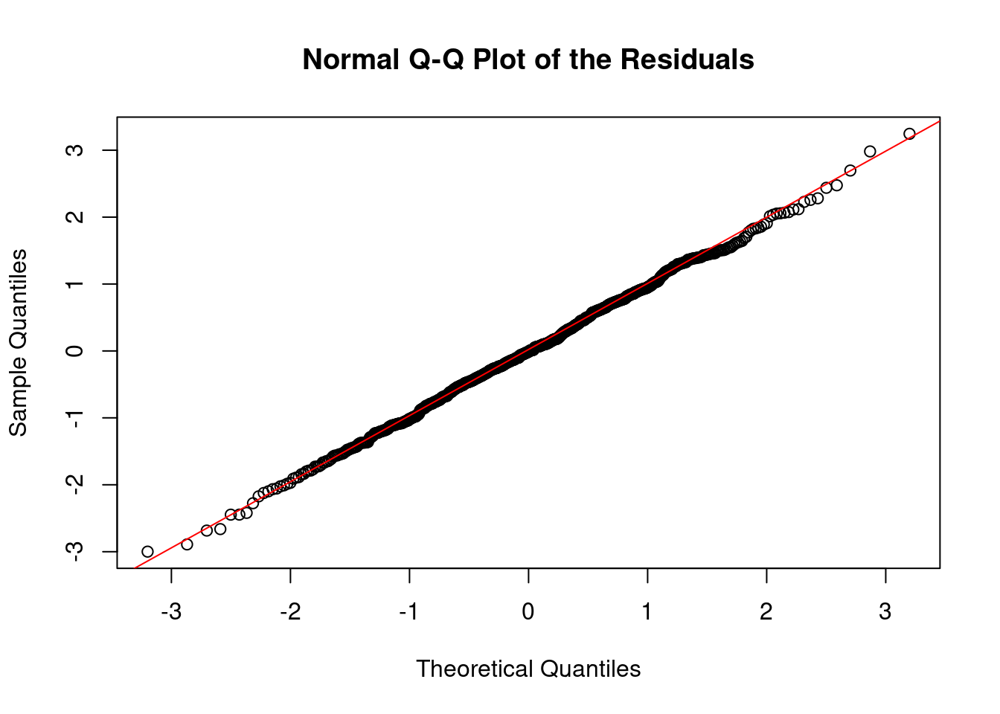
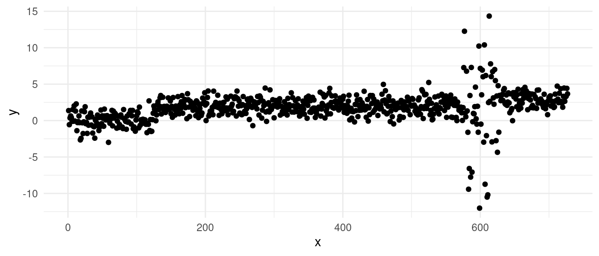
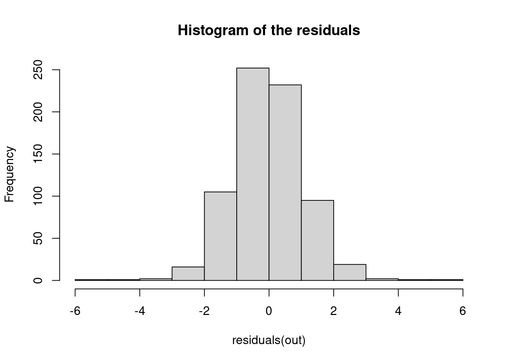
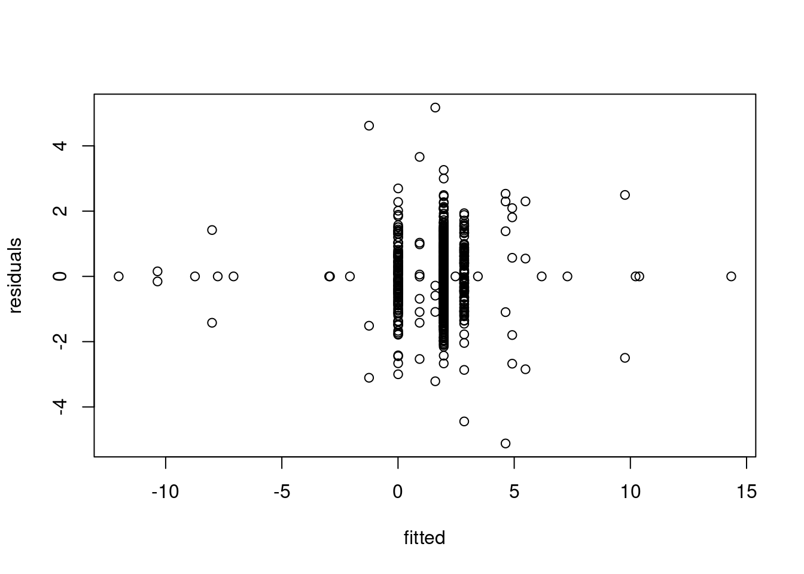
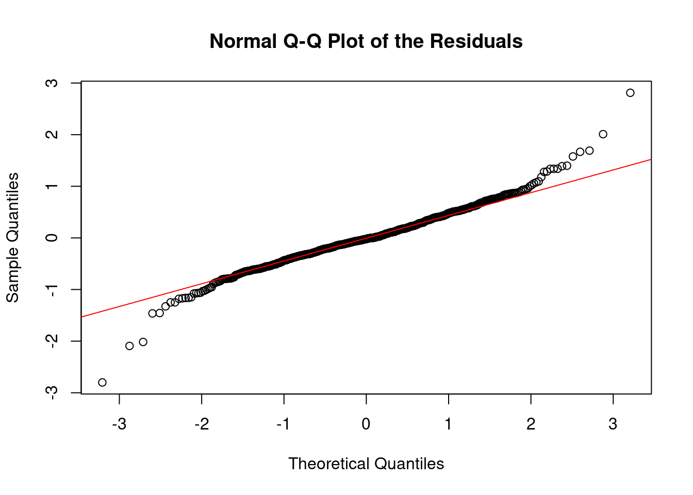

5 Working with Real Data
In practice, working with real-world data presents various challenges that can complicate our analyses. Unlike idealised examples, real data often contain noise, outliers, and other irregularities that can impair the accuracy of the segmentations we aim to generate. The assumptions we make in our models may not hold up well, and this can lead to poor estimates of changepoints. To tackle these issues, it is important to either use robust methods, or consider carefully how we handle the estimation of key parameters within our changepoint detection models.
5.1 Assessing the model fit
5.1.1 Assessing Residuals from a Changepoint Model
When dealing with real-world data and changepoint, it’s essential to evaluate how well the model fits the data. Apart from the elbow plot and visual inspection to assess a segmentation, this evaluation is often done by examining the residuals – the differences between the observed data points and the values predicted by the model. If the residuals exhibit certain patterns, it may indicate that the model is not capturing all the underlying structure of the data, or that assumptions about the error distribution are violated.
This section introduces three key diagnostic tools for assessing the residuals from a changepoint model: the histogram of residuals, the normal Q-Q plot, and the residuals vs. fitted values plot. These tools help assess whether the assumptions of the model (such as normality and homoscedasticity) hold.
As an example, we will run diagnostics on the following sequence:
On which PELT returns the segmentation:
5.1.1.1 1. Histogram of the Residuals
The histogram of the residuals is a simple but effective tool for visualizing the distribution of residuals. The histogram checks whether the residuals are approximately normally distributed. You should see a bell-shaped histogram centered around zero, indicating that the residuals are symmetrically distributed around the mean with no significant skewness or heavy tails.
hist(residuals(out), main = "Histogram of the residuals")- What to Watch for:
- Skewness: If the histogram is not symmetric, it could indicate skewness in the residuals, suggesting that the model may not fully capture the data’s structure.
- Heavy or light tails: Large bars far from zero indicate extreme residuals, which could be outliers. In case we see the histogram showing heavier tails, this may suggest that the data contains more extreme values than expected under the assumption of normally distributed errors. But note that if we see lighter tails, this might also suggest that we are overfitting over those outlier points!
5.1.1.2 2. Normal Q-Q Plot
The normal quantile-quantile (Q-Q) plot compares the distribution of the residuals to a theoretical normal distribution. The idea is to see if the residuals deviate significantly from the straight line that would indicate normality. Points should fall along a straight diagonal line, indicating that the residuals closely follow a normal distribution.
qqnorm(residuals(out), main = "Normal Q-Q Plot of the Residuals")
qqline(residuals(out), col = "red")
- What to Watch for:
- Deviations from the line: Systematic deviations suggest non-normality. For instance, if points deviate upwards or downwards at the tails of the plot, it might indicate heavy tails (more extreme values than a normal distribution would predict) or light tails (fewer extreme values). As above, both cases might suggest that we have outliers, as we might be in a scenario where we are overfitting our sequence.
5.1.1.3 3. Residuals vs. Fitted Values Plot
Finally, this plot shows the residuals on the y-axis against the fitted values from the model on the x-axis. It is particularly useful for checking if there are patterns in the residuals that suggest issues with the model fit. We would like to see some clusters, consisting of a random scatter of points around zero, with no discernible pattern, and roughly equal spread across all fitted values and clusters.
plot(fitted(out), residuals(out), xlab = "fitted", ylab="residuals")
- What to Watch for:
- To observe cluster of points in the data is normal, as the fitted values are the estimate of our piecewise signal. Maybe counter-intuitively, we need to look out for single observations alone! These could be segments which only have one or few observations in it, which could be a sign of overfitting. Note that these will not show up in the two plots above!
- Heteroscedasticity (Non-constant variance): If the residuals’ spread increases or decreases as the fitted values increase, it may indicate heteroscedasticity, which violates one of the key assumptions of many models (constant variance of residuals). If you observe heteroschedasticity only in one of the clusters, it might mean that we are underestimating the number of the changes!
5.1.2 Example: violating heteroschedasticity:
Let’s take the data from before, and add increase the variance in one of the segments:

A simple PELT change-in-mean fit gives us the segmentation:
With the diagnostics:


We can clearly see from the vertical lines that we have an oversegmentation in the third segment. The histogram and Q-Q plot both show some signs of deviations from a strict normal distribution, especially in the tails, which are lighter. This means that there might be some evidence of overfitting.
The residuals vs. fitted values gives us the better figure and provides the strongest evidence of overfitting: we can see that we have many small clusters consisting of just few points… Those which have two points, are almost symmetrically distanced from the 0 line. This is a clear sign of heteroschedasticity, where we overfitted across the sequence with larger variance.
5.2 Estimating Other Known Parameters
Let’s revisit the classic problem of detecting a change in mean. One of the key assumptions we’ve relied on so far is that the variance, \(\sigma^2\), is fixed, and known. Specifically, we used the following cost function in our models:
\[ \mathcal{L}(y_{s:t}) = \frac{1}{2\sigma^2} \sum_{i = s}^{t} \left ( y_i - \bar{y}_{s:t} \right)^2 \]
In our examples, we’ve typically set \(\sigma^2 = 1\). However, this assumption is often unrealistic when working with real data. When the true value of \(\sigma^2\) is unknown or incorrectly specified, the results of changepoint detection can be significantly affected.
- If we underestimate the variance by choosing a value for \(\sigma^2\) that is too small, the changepoint detection algorithm may overlook real changes in the data, resulting in fewer detected changepoints.
- Conversely, if we overestimate the variance with a value that is too high, the algorithm may detect too many changes, identifying noise as changepoints.
5.2.1 Neuroblastoma Example: The Impact of Mis-specified Variance
Consider the neuroblastoma dataset as an example. If we run a changepoint detection method like PELT or BS on this data without any pre-processing, we might observe that the algorithm does not detect any changes at all:
summary(out_op)Created Using changepoint version 2.3
Changepoint type : Change in mean
Method of analysis : PELT
Test Statistic : Normal
Type of penalty : MBIC with value, 16.36596
Minimum Segment Length : 1
Maximum no. of cpts : Inf
Changepoint Locations : In this example, PELT fails to detect any changes because the scale of the data suggests a lower variance than expected, affecting the algorithm’s sensitivity to changes.
5.2.2 Addressing Mis-specified Variance with Robust Estimators
One problem with estimating the variance in the change-in-mean scenario, is that depending on the size of the changes, these can skew your estimate…
One way to solve the issue of this, is that, on the assumption that the data is i.i.d. Gaussian, looking at the lag-1 differences \(z_t = y_t - y_{t-1} \ \forall \quad t = 2, \dots, n\):
qplot(x = 1:(n-1), y = diff(y)) + theme_minimal()Warning: `qplot()` was deprecated in ggplot2 3.4.0.And compute the sample variance across all these differences as an estimator for our sigma square: \(\hat \sigma^2 = \bar S(z_{1:n})\). However, we have not fixed our problem… yet!
What happens exactly at \(t = \tau +1\)? Well, across these observations, our \(z_{\tau + 1}\) appears as an outlier (why?). This can still skew our estimate of the variance.
A solution, is to use robust estimators of the variance. A common choice is the Median Absolute Deviation (MAD), which is less sensitive to outliers and can provide a more reliable estimate of \(\bar S\) in our case.
The formula for MAD is given by:
\[ \text{MAD} = \text{median}(|z_i - \text{median}(z_{1:n})|) \]
This estimator computes the median of the absolute deviations from the median of the data.
However, for asymptotical consistency, to fully convert MAD into a robust variance estimate, we can use:
\[ \hat \sigma_{\text{MAD}} = 1.4826 \times \text{MAD} \]
This scaling factor ensures that \(\sigma_{\text{MAD}}\) provides an approximately unbiased estimate of the standard deviation under the assumption of normally distributed data.
We then can divide our observations by this value to obtain ready-to-analyse observations. Go back and check the scale of the data in the segmentations in week 3!
While this trick provides a solution for handling variance estimation in the change-in-mean problem, more sophisticated models may require the estimation of additional parameters. And more advanced techniques are needed to ensure that all relevant parameters are accurately estimated (this is very much an open are of research)!
5.3 Non-Parametric Models
A alternative approach for detecting changes in real data, especially when we don’t want to make specific parametric assumptions, is to use a non-parametric cost function. This method allows us to detect general changes in the distribution of the data, not just changes in the mean or variance. One such approach is the Non-Parametric PELT (NP-PELT) method, which focuses on detecting any changes in the underlying distribution of the data.
For example, let us have a look at one of the sequences from the Yahoo! Webscope dataset ydata-labeled-time-series-anomalies-v1_0 [http://labs.yahoo.com/Academic_Relations]:
A1 <- read_csv("extra/A1_yahoo_bench.csv")Rows: 1427 Columns: 3
── Column specification ────────────────────────────────────────────────────────
Delimiter: ","
dbl (3): timestamp, value, is_anomaly
ℹ Use `spec()` to retrieve the full column specification for this data.
ℹ Specify the column types or set `show_col_types = FALSE` to quiet this message.ggplot(A1, aes(x = timestamp, y = value)) +
geom_vline(xintercept = which(A1$is_anomaly == 1), alpha = .3, col = "red") +
geom_point() +
theme_minimal()Following Haynes, Fearnhead, and Eckley (2017), we introduce the NP-PELT approach. Let \(F_{i:n}(q)\) denote the unknown cumulative distribution function (CDF) for the segment \(y_{1:n}\), where \(n\) indexes the data points. Similarly, let \(\hat{F}_{1:n}(q)\) be the empirical CDF, which provides an estimate of the true distribution over the segment. The empirical CDF is given by:
\[ \hat{F}_{1:n}(q) = \frac{1}{n} \left\{ \sum_{j=1}^{n} \mathbb{I}(y_j < q) + 0.5 \times \mathbb{I}(y_j = q) \right\}. \]
Here, \(\mathbb{I}(y_j < q)\) is an indicator function that equals 1 if \(y_j < q\) and 0 otherwise, and the term \(0.5 \times \mathbb{I}(y_j = q)\) handles cases where \(y_j\) equals \(q\).
Under the assumption that the data are independent, the empirical CDF \(\hat{F}_{1:n}(q)\) follows a Binomial distribution. Specifically, for any quantile \(q\), we can write:
\[ n\hat{F}_{1:n}(q) \sim \mathrm{Binom}(n, F_{1:n}(q)). \]
This means that the number of observations \(y_j\) less than or equal to \(q\) follows a Binomial distribution, with \(n\) trials and success probability equal to the true CDF value \(F_{1:n}(q)\) at \(q\).
Using this Binomial approximation, we can derive the log-likelihood of a segment of data \(y_{\tau_1+1:\tau_2}\), where \(\tau_1\) and \(\tau_2\) are the changepoints marking the beginning and end of the segment, respectively. The log-likelihood is expressed as:
\[ \mathcal{L}(y_{\tau_1+1:\tau_2}; q) = (\tau_2 - \tau_1) \left[\hat{F}_{\tau_1+1:\tau_2}(q) \log(\hat{F}_{\tau_1+1:\tau_2}(q)) - (1-\hat{F}_{\tau_1+1:\tau_2}(q))\log(1-\hat{F}_{\tau_1+1:\tau_2}(q)) \right]. \]
This cost function compares the empirical CDF of at the right and at the left of this data points, for all the points:
In practice, NP-PELT on the previous sequence gives the following:
library(changepoint.np)
y <- A1$value
cpt.np(y, penalty = "Manual", pen.value = 25 * log(length(y))) |> plot(ylab = "y")5.4 Exercises
5.4.1 Workshop exercises
Provide an interpretation of the residuals diagnostics from the Simpsons dataset:
